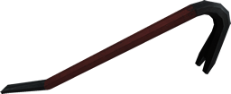
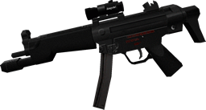
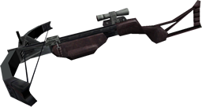
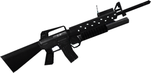

Weapons
Full listing of all the weapons you will get to use.
You can share your ammo from most weapons with other players with the dropammo command. H is a good key to put this on.
Contents
- Melee / tools
- Single-hand guns
- Double-hand guns
- Special weapons
- Disposable weapons
- Heavy weapons
- Biological weapons
Melee / tools
Crowbar
- Primary fire: Beat
- Secondary fire: Toggle electricity on/off (donors only)
- Tertiary fire: Throw crowbar
- Ammo: None
The half-life crowbar has been improved in Sven Co-op. Donors gain the special feature to add electric damage to their crowbar. The electric crowbar is powered through your HEV armor battery and will drain power from that source every time you successfully hit a player, ally, or enemy.
 With the electricity on you also beat objects faster, but keep an eye on your HEV power. With the electricity on you also beat objects faster, but keep an eye on your HEV power. The new tertiary fire, where you throw your crowbar hard, is bound to MOUSE3 (middle button) by default. The command for this is +alt1. The new tertiary fire, where you throw your crowbar hard, is bound to MOUSE3 (middle button) by default. The command for this is +alt1. |
 |
Combat knife
- Primary fire: Slash
- Secondary fire: Toggle electricity on/off (donors only)
- Tertiary fire: Throw knife
- Ammo: None
The combat knife featured in Opposing Force acts as a direct replacement for the crowbar, and is officially available to other maps. It functions exactly the same as the crowbar, but has a higher attack rate due to its lower weight.
- With the electricity on you also beat objects faster, but keep an eye on your HEV power.
- The new tertiary fire, where you throw your knife, is bound to MOUSE3 (middle button) by default. The command for this is +alt1
|
|
Pipe wrench
- Primary fire: Club / repair
- Secondary fire: Power swing
- Ammo: None
The wrench is similar to the crowbar, but swings at a much slower rate. However, it does much more damage. Use the power swing to get especially heavy swings.
- The longer you hold power swing before releasing, the more powerful the swing will be. There is a limit though.
- The pipe wrench can now repair your turrets, both sentry and mounted. It can also revive them.
|
|
Medkit
- Primary fire: Heal
- Secondary fire: Revive
- Ammo: Health points (self-generating)
The medkit is designed to help keep your team mates alive through the worst that can be thrown at them. Simply move close to a player that needs healing, and "fire" the medkit at them to instantly heal 10 health points. The medkit will be emptied quickly if lots of people need healing, but it will slowly recharge itself. You can also refill it quickly using wall-mounted health chargers once your own health is full.
To revive a dead player or friendly NPC, your medkit will need to have at least 50 health points stored. Get close to the other player or NPC and use the secondary fire to revive them.
- You cannot heal yourself with the medkit. Instead you will need to use the medic command (press Z) to call for assistance. If you are dead, you can still use the medic command to notify other players that you are in need of revival.
- You can only revive players and NPCs that haven't been gibed (body ripped apart to pieces). Conversely, you cannot call to be revived once you have been gibed.
|
|
Barnacle grapple
- Primary fire: Launch tongue
- Secondary fire: Toggle between pull/rappel mode
- Ammo: None
The Barnacle is used to help players reach areas that are too high to jump. It can only attach to players, certain monsters, and certain Xen surfaces (as shown on the right).
The way the Barnacle grapple works is defined by the map creator. On some maps, it will only attach to small monsters. On others, it will pull monsters to you instead of the other way around.
Unique to the Sven Co-op version of the Barnacle grapple, players can either be pulled by the grapple, or be dropped slowly (rappel), depending on what mode is chosen.
Finally, the Barnacle grapple can also be used to eat monsters similar to a regular Barnacle. The difference is the grapple is much smaller, thus takes much longer to kill an enemy. This bite is only effective against very small monsters, such as headcrabs.
- You can grapple onto your fellow players allowing you to, for example, boost another player onto a ledge then grapple up to the ledge yourself. Alternately, if you were on a ledge above a deep cavern, you could grapple onto a player and rappel to the bottom. You could even use the barnacle to hold onto another player as he swings through a tricky grapple course.
- You can swap between Rappel and Pull modes while the barnacle is attached to a surface, this allows you to bungee.
|
|
Back to the top...
Single-hand guns
9 mm pistol
- Primary fire: Single shot
- Secondary fire: Rapid fire
- Ammo: 9 mm
The 9 mm pistol is the most accurate when firing single shots. Rapid fire is faster, but also very inaccurate only useful for very close enemies.
|
|
.357 magnum
- Primary fire: Single shot
- Secondary fire: Toggle mini zoom scope on/off
- Ammo: .50
The magnum provides 6 very powerful shots with decent accuracy, but suffers slow rate of fire, high recoil, slow reloading times.
|
|
Uzis
- Primary fire: Automatic fire
- Secondary fire: Toggle between single/akimbo uzi
- Ammo: 9mm
The uzi is a very fast submachine gun with a 32 round clip that does a lot of damage very quickly, however your ammo is used up very fast.
Doubled up you get twice the fire power, but twice the reload time.
- Akimbo uzis can only be acquired by special akimbo uzi items, or picking up someone elses uzi.
- The gold uzis shown are only available to donors, and do considerably more damage than the standard grey ones. Donors can choose to use the grey ones, but still with the power level of the gold uzis.
|
|
Desert eagle
- Primary fire: Single shot
- Secondary fire: Toggle laser pointer on/off
- Ammo: .50
The desert eagle is a powerful pistol, but rather inaccurate in single fire mode.
You can increase the accuracy considerably by enabling the barrel-mounted laser pointer at the cost of a slower fire rate.
The rate of fire and accuracy is better than the .357 magnum and offers 7 shots, however less powerful.
|
|
Back to the top...
Double-hand guns
MP5A3 submachine gun
- Primary fire: Automatic fire
- Secondary fire: Toggle zoom scope on/off
- Ammo: 9mm
The MP5A3 is a light submachine gun, which holds 30 round clips. It has a mounted scope for zooming and a relatively high rate of fire. That and the low reloading time makes it an effective assault weapon.
|
 |
SPAS-12 shotgun
- Primary fire: Single shot
- Secondary fire: Automatic fire
- Ammo: Shells
The SPAS-12 shotgun offers very powerful blasts in single or automatic fire of 8 rounds. Automatic fire (gas operated) takes only a matter of seconds in to use all 8 shells, making it an extremely powerful weapon. It takes a little longer to reload, so make sure you have enough cover to do so. Automatic mode is also less accurate than single shots.
|
|
Crossbow
- Primary fire: Single shot
- Secondary fire: Toggle zoom scope on/off
- Ammo: Bolts
The crossbow is a long-range stealth weapon holding 5 bolts. It hardly makes noise and has a mounted scope for long range attacks.
While not using the zoom, bolts will explode when hitting something solid. Bolts never explode when the crossbow is zoomed, or if a bolt hits a target.
This weapon will also fire underwater, making it the best weapon to use against Ichthyosaur.
|
 |
M16 assault rifle with M203 grenade launcher
- Primary fire: 3-round burst fire
- Secondary fire: Prepare/fire grenade
- Ammo: 5.56 mm / assault rifle grenades
The M16 is the grunts' standard issue, not always with a grenade launcher.
The players' M16 will always have a grenade launcher. To use it, press secondary fire to insert a grenade into the barrel, then press secondary fire again when you're ready to launch it.
An M16 round consists of 30 5.56 mm rounds fired in 3-round bursts. 10 assault rifle grenades can be held, but only 1 inside the grenade launcher at a time.
|
 |
Back to the top...
Special weapons
Rocket propelled grenade launcher
- Primary fire: Fire rocket
- Secondary fire: Toggle laser guide on/off
- Ammo: Rockets
The RPG is a good weapon for armoured targets like helicopters, tanks and Gargantuas.
Secondary fire will enable the laser guidance system to alter the course of the rocket in flight.
 Remember that the rocket is thrown upwards roughly half a metre before firing forward. Keep this in mind when aiming rockets down small spaces. Remember that the rocket is thrown upwards roughly half a metre before firing forward. Keep this in mind when aiming rockets down small spaces. |
|
Gauss gun
- Primary fire: Single shot
- Secondary fire: Highly charged shot
- Ammo: Gauss battery module
The gauss gun is an experimental weapon fabricated in the Black Mesa Research Facility. Primary fire is an energy beam. You can charge up the weapon for a more powerful shot by holding secondary fire.
There is a very high knock back from maximum charged shots. Most maps will allow this knock back to allow the player to jump to much higher areas.
- Charged up shots will always provide a knock back, however it's mapper decision whether to allow vertical knock back.
- Don't charge up the gauss gun for too long; it will overcharge and backfire at the wielder.
|
|
Gluon gun
- Primary fire: Fire continuous beam
- Secondary fire: None
- Ammo: Gauss battery module
Just like the gauss, the gluon gun is an experimental weapon. Firing it will create a powerful beam, which can be used to quickly sweep an area.
- If you fire too close to a target or solid, the beam will also hurt you very quickly. Maintain roughly 2 metres from anything you fire at.
|
|
Hornet gun
- Primary fire: Single shot, homing
- Secondary fire: Rapid fire, straight
- Ammo: Hornets (self-generating)
Stripped from an alien grunt, the player can use this weapon to fire up to 100 live hornets. Primary fire will launch a homing hornet that will seek its target, whereas secondary fire will launch hornets in quick succession directly where the player is aiming.
Hornets are slowly reproduced, though 50% slower than before due to the higher hornet holding limit.
|
|
Back to the top...
Disposable weapons
Hand grenade
- Primary fire: Throw a grenade
- Secondary fire: Throw a banana bomb
Simple hand grenades with a 4 second fuse. The fuse starts as soon as you press down on primary fire.
If you hold primary fire, the fuse will remain active in your hand. This is handy for throwing shorter fuse grenades at enemies that traditionally avoid them.
- The banana bomb is 10 grenades in 1, thus you require 10 grenades to throw one. The fuse on banana bombs only start once they leave your hand.
|
|
Satchel charge
- Primary fire: Throw a satchel / detonate planted satchels
- Secondary fire: Throw additional satchel
The Satchel Charge can be used to ambush enemies or plan multiple explosions. Throw it on the ground, step back and detonate it with a remote control.
- You can pick up your own satchels that you plant by using them.
- You can kick anyone's satchels around by walking into them and dragging them along the floor, or jumping to kick them up high.
|
|
Tripmine
- Primary fire: Plant mine
- Secondary fire: None
Tripmines can be planted on floors, walls or ceilings. Within a second of its placement it will activate itself and emit a beam. As as soon someone or something touches the beam, the tripmine will explode.
- Shooting the mine once planted will also detonate the mine.
|
|
Snark
- Primary fire: Throw snark
- Secondary fire: None, or is it? ;)
The extremely nippy snark can be gathered from its nest and used as a weapon. Release a snark and it will pursue the first unfriendly tasty thing it can find.
Snarks thrown by players will never attack other players or allies.
|
 |
Back to the top...
Heavy duty weapons
M40a1 sniper rifle
- Primary fire: Single shot
- Secondary fire: Toggle zoom scope on/off
- Ammo: 7.62 mm
A powerful manual weapon with a slow rate of fire, the M40a1 is a standard sniper rifle.
- In Sven Co-op the M40a1 does more damage than in Opposing Force, but is very inaccurate when not zoomed in.
|
|
M249 SAW
- Primary fire: Automatic fire
- Secondary fire: None
- Ammo: 5.56 mm
The M249 SAW (squad automatic weapon) is a powerful yet portable machine gun with a high firing rate and damage. It can be used to provide supporting fire for team mates. It has a belt of 200 5.56 mm rounds, but suffers high reload time.
- The SAW has such a high recoil that it will knock the player backward while firing.
|
|
XM214 microgun
- Primary fire: Spin with automatic fire
- Secondary fire: Spin barrels
- Ammo: 5.56 mm
The most powerful weapon available to players, the microgun is capable of easily cutting through hordes of monsters with a fast stream of rounds. The microgun can be spun-up/kept spinning by holding using the secondary fire button. Pressing the fire button in this mode will make the microgun fire straight away without the spin-up delay.
While holding the microgun players are a lot slower, unable to jump, and unable to change weapons. You must drop the microgun to be able to select another weapon (set a key to drop weapon in the control options, or bind any key to drop -- usually G).
The microgun offers a continuous belt of 5.56 mm rounds without the need to reload.
- Players must pick up a microgun by using one on the ground rather than simply walking over one.
- The microgun cannot be fired while the player is on a ladder.
- When a heavy weapons grunt is killed, his microgun is dropped and is available for a player to pick up.
- Accuracy is dramatically improved by crouching while firing.
- While using the microgun a lone player is extremely vulnerable. The microgun must be used as a support weapon, with other players defending the microgunner and/or distracting enemies until the microgun can be spun up.
|
|
Biological weapons
Spore launcher
- Primary fire: Short shot
- Secondary fire: Long shot
- Ammo: Spores
A creature from race X that fires spores from its mouth also thrown by shock troopers. The spore creates a large acid splash on explosion.
The spores will bounce for a distance, then stop. They explode on player/NPC contact or after 4 seconds of being fired.
This artillery support weapon is best used in open spaces to avoid hurting yourself.
 Spores can be picked up from a small plant that creates them, but be aware that the plants don't like harsh treatment. Spores can be picked up from a small plant that creates them, but be aware that the plants don't like harsh treatment.- The acid splash creates a large amount of damage. Be sure to stay clear of spores when they explode.
- Bouncing spores could bounce right back and explode in your face.
|
|
Shock rifle
- Primary fire: Electric burst
- Secondary fire: Triple lightning bolt
- Ammo: Electricity (non-replenishable)
A shock roach from race X found in the hands of shock troopers can be picked up and used by players once it leaves its dying host.
Due to the fast self-destructing nature of shock roaches, you must drop yours to be able to select another weapon (set a key to drop weapon in the control options, or bind any key to drop -- usually G).
- Players must pick up a shock rifle by using one on the ground rather than simply walking over one.
- Players can charge up another player's HEV battery with the lightning bolt.
- The shock roach will begin to explode when it's low on charge. Throw it away when you notice it exploding or you will get hurt.
|
|
Back to the top...